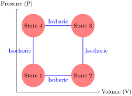

Section 1.1 Basic Concepts
The properties of a substance are the characteristics that describe its physical and chemical behavior. It only depends on the state of the system and is independent of the history of the system. The extensive properties of a substance depend on the amount of substance present, while the intensive properties do not. Examples of extensive properties include mass, volume, and energy, while examples of intensive properties include temperature, pressure, and density. The state of a substance is defined by its properties at a given instant. The state refers to the specific condition of a system at a given moment, uniquely defined by its thermodynamic properties. To define a state, a set of independent properties such as pressure (P), volume (V), temperature (T), and internal energy (U) must be defined. A system is in thermodynamic equilibrium in any perticular state. If even one property changes, the system moves to a different state. The phase of a substance is also an important aspect of its state, as it can exist in different phases (solid, liquid, gas) depending on the temperature and pressure conditions. A phase is a quantity of matter that is homogeneous throughout, and has a definite chemical composition and physically distinct properties. An example of a single phase is a pure substance like ice, while an example of a multi-phase system is a mixture of ice and water. A phase boundary is the interface between two phases, and it can have unique properties that differ from those of the individual phases. For example, in a glass of ice water, the solid ice is one phase and the liquid water is another.
Subsection 1.1.1 Thermodynamic Equilibrium
A system is in thermodynamic equilibrium when its macroscopic properties are unchanging in time and there are no net flows of matter or energy. In this state, the system is at its lowest possible energy and is stable. The properties of a system in thermodynamic equilibrium can be described by a set of state variables, such as temperature, pressure, and volume. These variables are related to each other through the equations of state, which describe the behavior of the system under different conditions. There are several types of thermodynamic equilibrium, including thermal equilibrium (where the temperature is uniform throughout the system), mechanical equilibrium (where the pressure is uniform throughout the system), and chemical equilibrium (where the chemical potentials of all species are equal throughout the system).
Equilibrium System: A state in which a system is in balance and there are no net changes occurring with respect to time. Non Equilibrium System: A state in which a system is not in balance and there are net changes occurring with respect to time.
Subsection 1.1.2 process and Cycles
Change of State: implies one or more properties of the system has changed. Process: a succession of changes of state. A process can be represented on a graph, such as a pressure-volume \(P-V\) diagram, where the path of the process is shown as a curve connecting the initial and final states. The area under the curve on a P-V diagram represents the work done by or on the system during the process. The change in internal energy of the system during a process can be calculated using the first law of thermodynamics, which states that the change in internal energy is equal to the heat added to the system minus the work done by the system.
Isothermal Process: A process that occurs at constant temperature. In an isothermal process, the internal energy of the system remains constant, and the heat added to the system is equal to the work done by the system. Adiabatic Process: A process that occurs without any heat exchange with the surroundings. In an adiabatic process, the change in internal energy of the system is equal to the work done by the system. Isobaric Process: A process that occurs at constant pressure. In an isobaric process, the work done by the system is equal to the change in volume of the system multiplied by the constant pressure. Isochoric Process: A process that occurs at constant volume. In an isochoric process, the work done by the system is zero, and the change in internal energy of the system is equal to the heat added to the system.
Cycle: a process that returns a system to its initial state. It is a thermodynamic “round trip.”
In a cycle, the system undergoes a series of processes that eventually return it to its original state. The net work done by the system over one complete cycle is equal to the net heat added to the system, as stated by the first law of thermodynamics. Cycles are important in thermodynamics because they can be used to analyze the performance of engines and other devices that convert heat into work. Examples of cycles include the Carnot cycle, which is an idealized cycle that represents the maximum efficiency of a heat engine, and the Rankine cycle, which is commonly used in power plants to generate electricity.
A cycle can be represented on a graph, such as a pressure-volume (P-V) diagram, where the path of the cycle is shown as a closed curve. The area enclosed by the curve on a P-V diagram represents the net work done by the system during one complete cycle. The efficiency of a cycle can be calculated by dividing the net work done by the system by the heat added to the system during the cycle. The efficiency of a cycle is always less than 100% due to irreversibilities and losses in real systems.
In summary, a process is a succession of changes of state, while a cycle is a process that returns a system to its initial state. Both processes and cycles are important concepts in thermodynamics, as they help us understand how energy is transferred and transformed in different systems.
